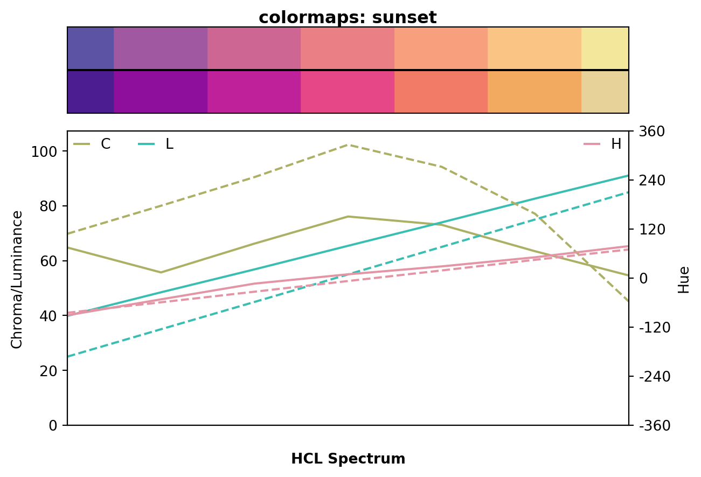

Approximating Palettes from Other Packages
Overview
The flexible specification of HCL-based color palettes in colorspace allows one to closely approximate color palettes from various other packages:
- (Harrower and Brewer 2003) as provided by different Python packages such as
colormaps,brewer2mpl(2014, no longer maintained),colorbrewer(2018), and others. - (CARTO 2019) as provided by e.g.,
colormaps. - The viridis palettes of Smith and Van der Walt (2015) developed for
matplotlib. - The scientific color maps of Crameri (2018).
See the discussion of HCL-based palettes for more details. In the following sections specplot is used to compare the HCL spectrum of the original palettes (top swatches, solid lines) and their HCL-based approximations (bottom swatches, dashed lines).
Before, a selection of such approximations using specplot is highlighted and discussed in some more detail. Specifically, the graphic below shows two blue/green/yellow palettes (colormaps.ylgnbu and matplotlib.cm.viridis) and two purple/red/yellow palettes (colormaps.sunset and matplotlib.cm.plasma). Each panel compares the hue, chroma, and luminance trajectories of the original palettes (top swatches, solid lines) and their HCL-based approximations (bottom swatches, dashed lines). The palettes are not identical but very close for most colors. Note also that the chroma trajectories from the HCL palettes (green dashed lines) have some kinks which are due to fixing HCL coordinates at the boundaries of admissible RGB colors.
from colorspace import specplot, sequential_hcl
# From colormaps package
import colormaps
import numpy as np
from matplotlib.colors import rgb2hex
# Note: There is currently a bug with `colormaps 0.4.1` in combination
# with `matplotlib 3.9.1`, thus the hex colors are hardcoded but
# based on the following command:
# colormaps_ylgnbu = [rgb2hex(x) for x in colormaps.ylgnbu(np.linspace(1, 0, 7))]
colormaps_ylgnbu = ["#081d58", "#253494", "#225ea8", "#41b6c4",
"#7fcdbb", "#edf8b1", "#ffffd9"]
# Comparing against colorspace YlGnBu
specplot(colormaps_ylgnbu,
sequential_hcl("YlGnBu").colors(7),
title = "colormaps: ylgnbu");from colorspace import specplot, sequential_hcl
# Drawing colors from matplotlib color map
import matplotlib.cm
from matplotlib.colors import rgb2hex
import numpy as np
pal = matplotlib.cm.viridis
mpl_viridis = [rgb2hex(x) for x in pal(np.linspace(0, 1, 7))]
# Comparing against matplotlib viridis color palette
specplot(mpl_viridis,
sequential_hcl("Viridis").colors(7),
title = "matplotlib: Viridis");
from colorspace import specplot, sequential_hcl
# From colormaps package
import colormaps
import numpy as np
from matplotlib.colors import rgb2hex
# Note: There is currently a bug with `colormaps 0.4.1` in combination
# with `matplotlib 3.9.1`, thus the hex colors are hardcoded but
# based on the following command:
# colormaps_sunset = [rgb2hex(x) for x in colormaps.sunset(np.linspace(1, 0, 7))]
colormaps_sunset = ["#5c53a5", "#a059a0", "#ce6693", "#eb7f86",
"#f8a07e", "#fac484", "#f3e79b"]
# Comparing against colorspace ag_Sunset
specplot(colormaps_sunset,
sequential_hcl("ag_Sunset").colors(7),
title = "colormaps: sunset");
from colorspace import specplot, sequential_hcl
# Drawing colors from matplotlib color map
import matplotlib.cm
from matplotlib.colors import rgb2hex
import numpy as np
pal = matplotlib.cm.plasma
mpl_plasma = [rgb2hex(x) for x in pal(np.linspace(0, 1, 7))]
# Comparing against matplotlib plasma color palette
specplot(mpl_plasma,
sequential_hcl("Plasma").colors(7),
title = "matplotlib: Plasma");These graphics illustrate what sets the viridis palettes apart from other sequential palettes. While the hue and luminance trajectories of "Viridis" and "YlGnBu" are very similar, the chroma trajectories differ: While lighter colors (with high luminance) have low chroma for “YlGnBu”, they have increasing chroma for "Viridis".
Similarly, "ag_Sunset" and "Plasma" have similar hue and luminance trajectories but different chroma trajectories. The result is that the viridis palettes have rather high chroma throughout which does not work as well for sequential palettes on a white/light background as all shaded areas convey high “intensity”. However, they work better on a dark/black background. Also, they might be a reasonable alternative for qualitative palettes when grayscale printing should also work.